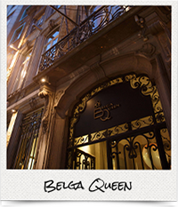
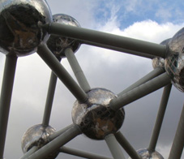
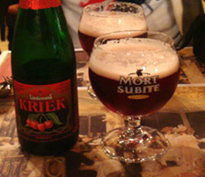
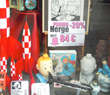

From its founder Pierre Draps, to the legend of Lady Godiva, to its home in Belgium, and its international reputation today as a premium chocolatier, GODIVA is a brand enriched with history, tradition, elegance and innovation.
All of the above facets and qualities, plus more, are bound together by one core theme: passion. Whether it's a love for exquisite chocolate, or a deep appreciation for profound craftsmanship, or a fondness for all things Belgian, it’s our strong passion for what we adore that brings us all together — and keeps us coming back for more.
We share this passion with you here, at GODIVA’s first online magazine. Please enjoy our adventures with Asian starlet Angelababy, our tourist guide to Brussels, conversations with our chefs chocolatier and long-serving staff, as well as, of course, our upcoming beautiful collections to tantalise all for Christmas 2013, Lunar New Year and Valentine’s Day 2014.
Our GODIVA journey here is certainly not complete without a divine chocolate experience. We invite you to enter our lucky draw (look out for it in the magazine!), with shopping offers and luxurious gift hampers to be won. Please enjoy!
Carmen Chiu
Marketing & Merchandising Director
GODIVA Chocolatier (Asia) Ltd.
*With thanks to: Cocoon Bridal Company, G-Star RAW, Jimmy Choo, Paule Ka, Valentino. Valentino.
Contents
4TRAVELThe best of Brussels to eat, play, love
7TOURVisit GODIVA’s Grand Sablon store and Factory
8PROFILESInterviews with GODIVA chefs Thierry Muret and Philippe Daue
19CNY & VALENTINE’sThe gift of giving to loved ones
20PEOPLEMeet Hong Kong bloggers and influencers
The Best of Brussels
A local guide to the best sights and scenes in the Belgian capital
Full of allure and history, Brussels is a city rich in tradition yet full of contemporary charm. A bon vivant at heart, Brussels’ passion is to fully indulge in the good life — with architectural splendour, innovative dishes, the finest beers and, of course, the best chocolates in the world.
Here is our local guide to the best of Brussels, the “Capital of Europe”.
Eat
Although the national dish of Belgium is “moules et frites” (mussels and fries), Brussels offers magnificent choices for innovative dining and diverse ethnic cuisines.
BELGA QUEEN
Housed in an 18th-century landmark, this buzzing brassiere celebrates the best of Belgium. An unforgettable sensuous experience.Rue Fossé-aux-Loups 32, 1000 Brussels | 32-2-217-2187 | website

BISTRO DU CANAL
A small bistro located on the Brussels-Charleroi canal. Patrons can enjoy typical Belgian and French brassiere food at reasonable prices in a friendly, casual and trendy setting.
Antoine Dansaertstraat 208, 1000 Brussels | +32-2-511-0360 | website
CHALET DE LA FORET
Chef Pascal de Valkeneer’s double Michelin-starred wonderment combines traditional cooking with the freshest seasonal ingredients and avant-garde concepts. A beautiful gastronomic experience.Drève de Lorraine 43, 1180 Brussels | +32-2-374-5416 | website
LA SOEUR DU PATRON
Capturing the essence of Brussels, this must-try Belgian brassiere offers a selection of international dishes in a modern-rustic setting. Try to get a table on the terrace or roof!
Chaussée de Wavre 1700, 1160 Auderghem | +32-2-675-0092 | website
NOORDZEE-MER DU NORD
The best fish and seafood shop in town, revered for its pub-like atmosphere and fresh, simple, homemade food. Enjoy your meal with a cold beer or white wine.
Rue Ste Catherine 45, 1000 Brussels | +32-2-513-1192 | website
Play
Looking for a mix of the best and off-the-beaten-path fun in Brussels? We have them.
Art
BOZAR CENTRE FOR FINE ARTS
Where architecture meets cinema, literature, music and theatre. Sunday morning concerts are a fun experience, especially for families. Rue Ravenstein 23, 1000 Brussels | +32-2-507-8200 | website
HORTA MUSEUM
Victor Horta, pioneer of Art Nouveau architecture, built his first house between 1898-1901. This preserved space was his home and atelier, full of fresh vision and innovative style. Rue Américaine 23-25, 1060 Brussels | +32-2-543-0490 | website
MUSÉES ROYAUX DE BEAUX ARTS de Belgique
If just one museum must be visited, this is the one. Take in Belgium’s rich, creative past, from Flemish Primitives to haunting Symbolism and complex Surrealism. Rue de la Régence 3, 1000 Brussels | +32-2 -508-3211 | website
Drink
GOUPIL LE FOL
Offering an intimate and romantic setting, this eclectic bar mixes the world of revolution, literature and art with beer, cocktails and fruit wine. Expect a late night here. Rue de la Violette 22, 1000 Brussels | +32-2-511-1396
GREENWICH
Famed for its chess-playing regulars, old-world atmosphere, Art Nouveau décor and Belgian beers. A unique experience, even if just for a look. Rue Des Chartreux 7, 1000 Brussels | +32-2-540-8878
Listen
CAFÉ MONK
Famous locally for its extensive Belgian beer selection, this café-lounge has a mixed crowd, and great live and jazz music. Rue St. Catherine 42, 1000 Brussels | +32-2-503-0880 | website
L’ARCHIDUC
Conveniently located in the fashionable Antoine Dansaert Street and often referred to as “the coolest bar in Belgium,” this Art Deco themed bar is home to top local artists. Expect anything, from trip-hop to jazz or country music. Antoine Dansaert 6, 1000 Brussels | +32-2-512-0652 | website
Love
Whether it’s shopping or eating, here is why you will fall in love with Brussels.
BRUSSELS VINTAGE MARKET
The city’s most popular vintage and second-hand market offers a day of shopping, food, music and fun. First Sunday of every month, 12-7pm | Halles Saint Géry | website
PARC DE BRUXELLES
Created in the 18th Century, this is one of the city’s best parks. Enjoy art, theatre, fountains and lush gardens. Site of The French Revolution and the Belgian War of Independence, it’s located in the heart of Brussels, in front of the Palace of the King.
RUE ANTOINE DANSAERT
This is the shopping spot to visit. Known for its hip and happening vibe, it’s where you’ll find stylish boutiques like Hatshoe and Stijl, Belgian designer Annemie Verbeke, local jeweller Christa Reniers, interior design shop La Fabrika, and Belgium’s emerging talent showcased at Glorybox. After shopping, head to super-cool bars on Place St.-Géry or nearby Place Ste.-Catherine for stylish bistros and outdoor food and flower markets.

Atomium
Built for the 1958 Universal Exhibition, this monument is, as the name suggests, an oversized model of an atom.

Beer
Belgium is famous for its beer, with over 500 different varieties.
Castles
There are more castles per square mile in Belgium than anywhere else in the world.
Lace
Producing lace since the Middle Ages, Belgium creates intricate patterns unmatched by any other country in the world.
Manneken Pis
Locals take much pride in this infamous bronze statue of a little boy urinating into a fountain.

TinTin
Fictional adventurer Tintin was created by Belgian cartoonist Hergé in 1929.
Charming Landscapes
GODIVA’s unique heritage and humble roots can be experienced in its home of Brussels
Since its earnest beginnings in 1926 when Pierre Draps transformed his homemade pralines into the luxury brand we know today, GODIVA has always had a high reputation, with over 450 boutiques and cafes in more than 80 countries around the world. Appointed in 1968 by the Royal Court of Belgium as its official supplier, the GODIVA Grand Sablon store in Brussels embodies history and nostalgia. It offers an authentic, charming, premium experience for fans and tourists alike, with hand-dipped strawberries to handmade liqueur pralines and collectible box gift sets.
GODIVA lovers, including VIP celebrity guests such as Asian starlets Angelababy and Pace Wu flock to its factory in Brussels, to witness the meticulous attention and innovative craftsmanship behind each piece of chocolate. With sophisticated skills and devoted passion, it’s no surprise that the average career length at the renowned GODIVA Factory is a remarkable 15 years.

 Carmen Chiu
Carmen Chiu